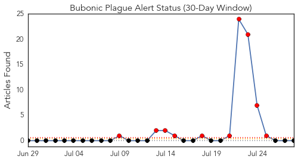
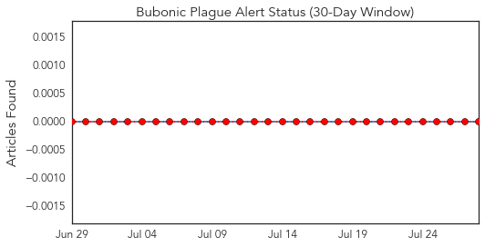
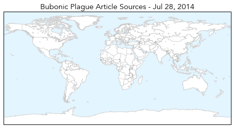
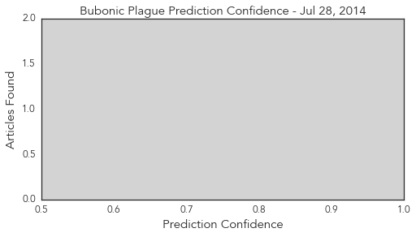
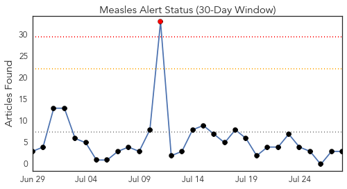
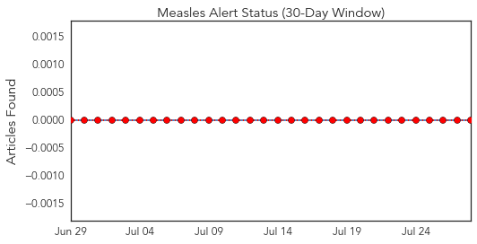
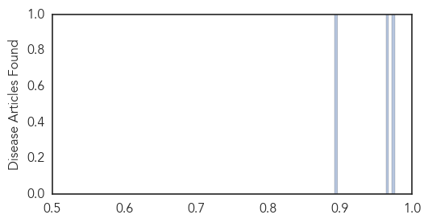

Bubonic Plague
30-Day Web Trend
10 alerts, 0 warnings

30-Day Twitter Trend
0 alerts, 0 warnings

Article Locations
Article Confidences
Top Articles:
-
No articles found for Jul 28, 2014
Top Tweets:
-
No tweets found for Jul 28, 2014
Measles
30-Day Web Trend
1 alerts, 0 warnings

30-Day Twitter Trend
0 alerts, 0 warnings

Article Locations

Article Confidences
Top Articles:
Top Tweets:
-
No tweets found for Jul 28, 2014